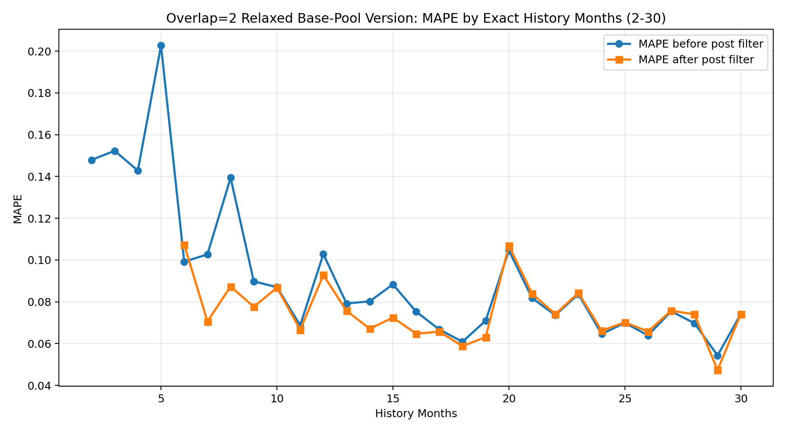
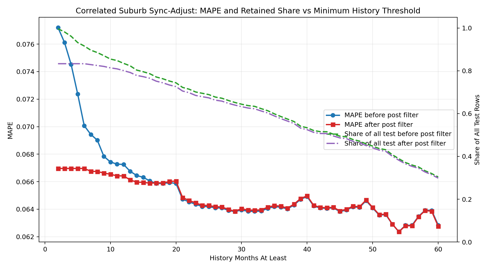
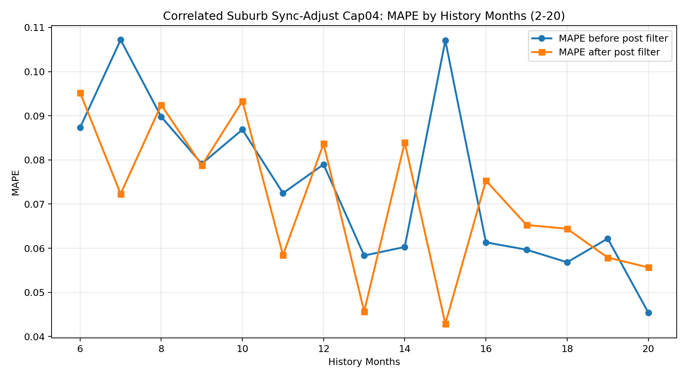

Problem, Method, and Result
Problem: we need to estimate building-bedroom rent using suburb-level base series while handling different history lengths, limited base pools, and uncertain predictions. Method: the retained approach combines correlated suburb selection, lag expansion, suburb sync adjustment, unit adjustment, and post-estimation validation. Result: the latest relaxed base-pool overlap=2 version reached 99.67% raw coverage, retained 83.32% after filtering, and achieved 6.70% post-filter MAPE.
Latest Method Settings
- Test subset:
piawith date>= 2023-01-01. - Evaluation subset:
history_months >= 2. - Overlap threshold:
2. - Candidate base:
suburb + property_type + bedroom. - Lags:
lag0,lag1,lag2,lag3. - Weight constraints: nonnegative, sum to 1, same-suburb total weight
<= 0.4. - Broader base-pool thresholds: minimum months 6, minimum coverage ratio 0.35, minimum monthly count 1.
What Changed From the Earlier Strict Version
The most important change was not a new model family. Instead, the base pool and long-history requirements were relaxed. Long-history targets no longer fail just because the required number of suburbs exceeds the available pool. If the strict stable pool is empty, the method now falls back to a relaxed scored suburb pool.
Exact history-month MAPE
This figure shows how MAPE changes by exact history-month group before and after the post-estimation filter.

Retained Share and MAPE by History Threshold
This figure fixes the denominator as all test rows and shows retained share and MAPE under different history thresholds. This is the recommended reporting view.

Earlier Cap04 version
The earlier Cap04 version used stricter candidate suburb rules and therefore had much lower coverage. It is useful as a comparison point because it shows that the coverage issue was mainly driven by pool and requirement settings rather than the correlated-suburb idea itself.
